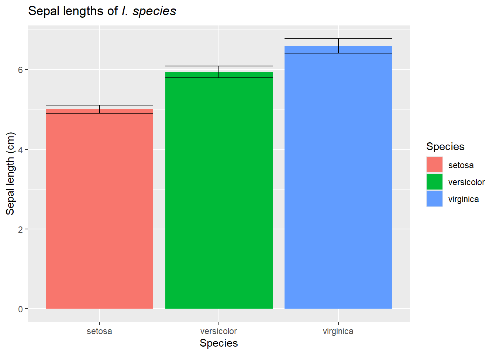
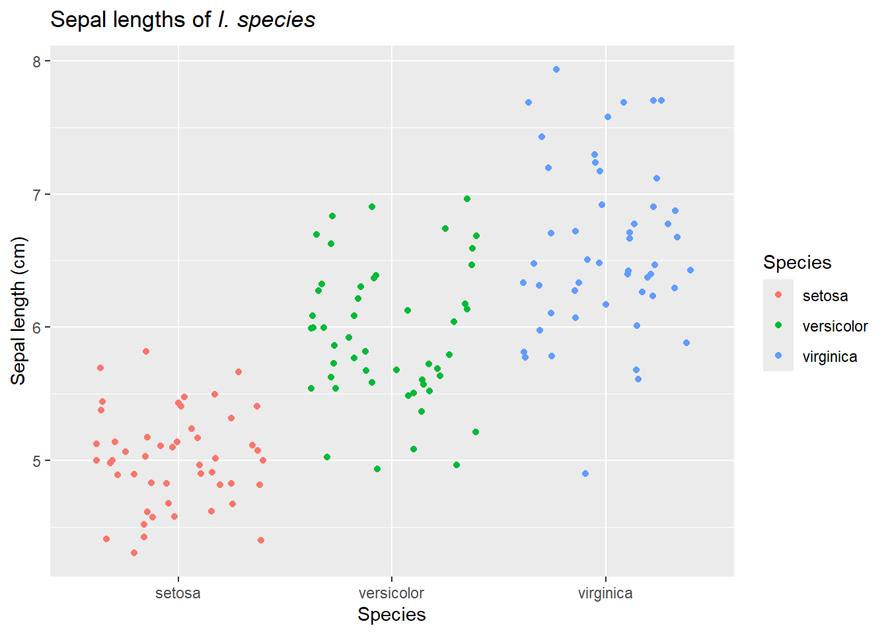
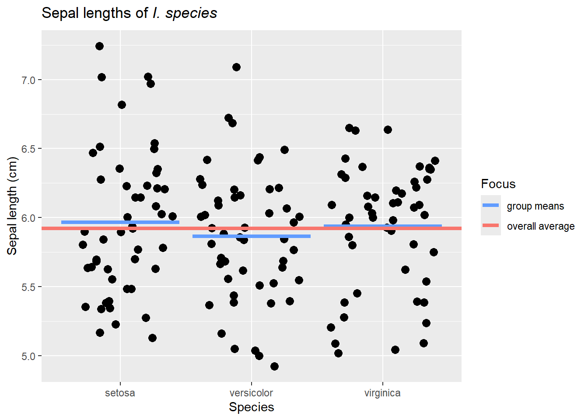
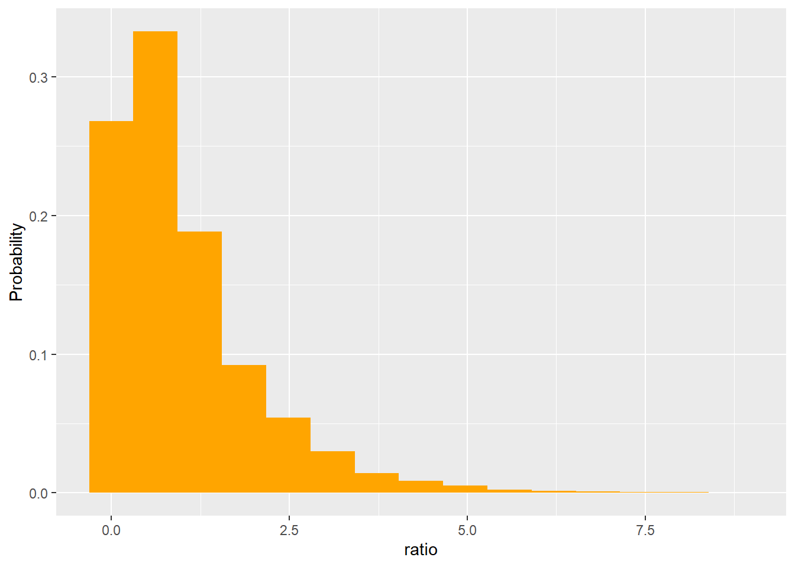

In the last chapter we introduced the idea of comparing parameters among populations. Now we will extend those ideas to instances when continuous data is collected.
Example: Back to the iris
When we introduced NHST for continuous data, we focused on sepal length from I. virginica.
We then considered how to assess these types of hypotheses using z, t, Wilcoxon, and sign tests.
However, as we noted in the last chapter, we often instead have data from multiple populations. For example, we may have data from 3 species of flowers. We commonly see this data plotted as a bar chart with error bars

What do we test now and how?
Welcome to ANOVAs
As previously noted, we can’t compare heights among group. Height is a random variable, and it’s highly unlikely they will be exactly the same. Seeing the actual data may help us remember this.
So we typically focus on a parameter that describes the distribution of a focal trait, such as the mean. Just like binomial data, our hypotheses are then
Given that, our overall idea is to consider if the data are better explained by an overall group average or by species-specific averages. To visualize this, we could use this image.
library(viridis)ggplot(iris, aes(Species,Sepal.Length)) +geom_jitter(size =3) +geom_errorbar(aes(ymin=Sepal.Length, ymax=Sepal.Length, color="group means"), size=1.5, data = function_output) +geom_hline(aes(yintercept=mean(Sepal.Length), color ="overall average"), size=1.5)+scale_color_manual(values =c("#619CFF","#F8766D"))+labs(title=expression(paste("Sepal lengths of ",italic("I. species"))),y="Sepal length (cm)",x="Species", color="Focus")
Warning: Using `size` aesthetic for lines was deprecated in ggplot2 3.4.0.
ℹ Please use `linewidth` instead.

Like our earlier considerations of variance and SSE, the data will obviously be fit better by species-specific averages. Its impossible for them to do worse than the overall average, and at worst they all are the group average. However, we should also remember that these are samples, so we know sampling error is an issue. Therefore, we have to consider if the species-specific averages do enough of a better job explaining the data to warrant using them. To put this in our SSE and hypothesis framework, we need to consider if a more complicated view of the world is worth it.
To test this, we can (as always) carry out a sampling experiment. The general idea is that species does snot matter (just like we saw in contingency analysis). Given that, we can draw samples that match our respective sample sizes for each population from a single population. The mean can be set as the pooled mean for the data (since under the null tested factors don’t matter). Since we don’t know or set sigma, we can again estimate it from the data. One such sample might look like
As expected, under the null hypothesis the overall and species-specific averages are closer. Now that we have the data, however, we are stuck with a new question: What is our test statistic?
In general, using a difference among means makes sense for cases when we have only 2 populations. This will be used when we introduce t-tests. However, it does not work for 3+ populations, so we will need a different approach.
ANOVAs offer an approach that can be used for any group of 2+ populations when certain assumptions are met. ANOVAs stands for analysis of variance which may seem odd given our hypotheses are focused on means. However, the idea (not fully developed here) is that we can get an overall estimate of variance by
calculating variance for each point around its respective group-specific mean
this leads to 3 estimates of variance, which we can multiply by (nj-1) to account for differences in sample size and then divide by the number of samples to get an overall estimate of variance
this is referred to as mean square error
\[
\begin{split}
\textrm{Remember, }s^2 = \frac{\sum_{i=1}^{n} (Y_{i}-\overline{Y})^2}{n-1} \sim \sigma^2\\
\textrm{So if we have j groups, for each group we can see}\\
s_j^2 = \frac{\sum_{i=1}^{n_j} (Y_{ij}-\overline{Y_j})^2}{n_j-1} \sim \sigma_j^2\\
\textrm{which we can combine to estimate }\sigma^2_{overall}\\
\frac{(n_1-1)s_1^2 + (n_2-1)s_2^2 ...(n_j-1)s_j^2}{n_1+n_2+...n_j-j} = s_{overall}^2\\
\end{split}
\]
calculating variance for each group mean around the overall mean
this can be multiplied by \(n\) to get \(\sigma^2\)
this is referred to as mean square treatment
\[
\begin{split}
\frac{\sum_{j=1}^{j} (\overline{Y_j}-\overline{\overline{Y}})^2}{j-1} = \frac{s^2}{n} \\
\textrm{where j is the number of groups and }\ \overline{\overline{Y}}\ \textrm{is the overall mean.}\\
\end{split}
\]
In other words, variance among groups should be equal to variance within groups. Under the null hypothesis, the ratio of these estimates should tend towards 1. We can see this using a sampling experiment.
Warning: The dot-dot notation (`..count..`) was deprecated in ggplot2 3.4.0.
ℹ Please use `after_stat(count)` instead.

Using this approach, we could determine how unusual our data were (get a p-value!). In our example, we found a signal of 119.265. Looking at the x-axis above, it’s obvious getting a sample this or more extreme is going to be very rare by chance!
However, finding a distribution that approximates this shape would make future work easier. It turns out all the squared terms above lead to this being a rato of \(\chi^2\) distributions, where the numerator has degrees of freedom j-1 (# of groups - 1) and the numerator had degrees of freedom n-j-1 (the “lost” degrees of freedom are used to estimate group and overall means). We call this the F distribution.
ggplot(ratio, aes(ratio)) +geom_histogram(aes(y=..count../sum(..count..)), fill ="orange", bins =12) +labs(main ="Ratio under null hypothesis", y="Probability")+stat_function(fun = df, args =list(df1 =2, df2 =147), color ="green")

This allows us to estimate the p-value using distributional assumptions.
Why do we sometimes talk about sums of squares?
You should also note this means we can partition the variance for any given observation as its distance from its group mean and its group means distance from the overall. It turns out when we do this, we can decompose the total sums of squares (similar to variance but not divided!) into those attributed to the distance of points from the group mean and the distance of group means from the grand mean (not proven here). These are additive (equal to) to the total sums of squares. . For a proof (and more links!) seeSoch et al. (2024); main part reproduced below:
where \(\mathrm{SS} _\mathrm{tot}\) is the **total sum of squares](/D/tss),\(\mathrm{SS} _\mathrm{treat}\) is the treatment sum of squares (sometimes call explained sum of squares, and\(\mathrm{SS} _\mathrm{res}\) is the residual sum of squares (sometimes called sum squares error).
Proof: The total sum of squares for one-way ANOVA is given by
This fact, and some clever math tricks, made them easy to work with. Eventually, however, we are focusing on the fact we are estimating the variance in multiple ways.
and what is \(\chi^2\)
Remember from the notes on contingency analysis that a \(\chi^2\) distribution is a Z variate squared.It’s defined by degrees of freedom equal to the number of free variates it is summed over.
Welcome to the linear model
An ANOVA is just one case of a linear model. We will fully explore these later, but noting this now is useful in that all linear models have the same sets of assumptions. In general, linear models assume the residuals of the model are are independent, identically distributed, and follow a normal distribution. You’ll sometime see this written as
\[
\epsilon \approx i.i.d.\ N(\mu,\sigma)
\]
But what does this mean?
Residuals are the distance between a measurement and its model-predicted value. A closely related term, error, is actually the distance between a measurement and the unknown population mean for a group. Linear models assume the residuals are independent of each other (this follows from independent data points) and that their spread (around their predicted values) is normally distributed and similar for all points.
Understanding this explains two key points. The residuals, not the data, need to be normally distributed. Also, we have to build the model to get the residuals, then we check the assumptions.
We can do this in R using the lm function. This approach also lets us use a single set of functions to build many model types. As always, there are many ways to do anything in R, so there are specific ANOVA functions that we will not introduce here.
For our data, we can build an lm object
iris_anova <-lm(Sepal.Length~Species, iris)
then use plot to check the assumptions.
plot(iris_anova)
These 4 plots focus on the residuals (not the data).
The Residuals vs fitted plot allows us to see if the residuals are identically distributed - we want to see a flat red line and no structure to the residuals in regards to their spread or location. Note we only have 3 fitted values here (matching our 3 group means), so will see “lines” of data in one-way ANOVAs (another name for what we are doing here).
The Q-Q Residuals plot allows us to assess normality - points should be on the line
The other 2 graphs give show different forms of residuals against the fitted values. We will return to them later.
If our assumptions are met, we can look at the output. One way to do this is using the summary function.
summary(iris_anova)
Call:
lm(formula = Sepal.Length ~ Species, data = iris)
Residuals:
Min 1Q Median 3Q Max
-1.6880 -0.3285 -0.0060 0.3120 1.3120
Coefficients:
Estimate Std. Error t value Pr(>|t|)
(Intercept) 5.0060 0.0728 68.762 < 2e-16 ***
Speciesversicolor 0.9300 0.1030 9.033 8.77e-16 ***
Speciesvirginica 1.5820 0.1030 15.366 < 2e-16 ***
---
Signif. codes: 0 '***' 0.001 '**' 0.01 '*' 0.05 '.' 0.1 ' ' 1
Residual standard error: 0.5148 on 147 degrees of freedom
Multiple R-squared: 0.6187, Adjusted R-squared: 0.6135
F-statistic: 119.3 on 2 and 147 DF, p-value: < 2.2e-16
This output may be confusing, however. The overall p value shown in the bottom right is for the entire model - that works for now, but soon won’t. We also see individual p values for 2 levels of species, plus an odd intercept term.
These are model artifacts and may be confusing. R lets the first factor level (typically alphabetical) be an intercept for the linear model, and then considers the other factor levels as deviations from that. It also shows if all the resulting Estimates are significantly different from 0. Note this means a significant intercept term does not mean your groups actually differ.
Given these issues, why use the summary command? It does present some other useful information. For example, the R2 values is a measure of how variation the model explains. It can range from 0 (the model explains nothing) to 1 (all residuals are zero, in this case meaning all members of a given species have the exact same height). The adjusted-R2 value is similar, but it adjusts the measure to account for the fact more complex models will always explain more variation.
You can also remove the intercept to get group estimates for all groups
summary(lm(Sepal.Length~Species-1, iris))
Call:
lm(formula = Sepal.Length ~ Species - 1, data = iris)
Residuals:
Min 1Q Median 3Q Max
-1.6880 -0.3285 -0.0060 0.3120 1.3120
Coefficients:
Estimate Std. Error t value Pr(>|t|)
Speciessetosa 5.0060 0.0728 68.76 <2e-16 ***
Speciesversicolor 5.9360 0.0728 81.54 <2e-16 ***
Speciesvirginica 6.5880 0.0728 90.49 <2e-16 ***
---
Signif. codes: 0 '***' 0.001 '**' 0.01 '*' 0.05 '.' 0.1 ' ' 1
Residual standard error: 0.5148 on 147 degrees of freedom
Multiple R-squared: 0.9925, Adjusted R-squared: 0.9924
F-statistic: 6522 on 3 and 147 DF, p-value: < 2.2e-16
Note these match our group means, which is good, but the overall p value is now less useful (it compares our data to a null that assumes everything is equal to 0), and the output is still confusing.
Since we are doing an omnibus test, what we typically want is a single p value associated with our factor of interest (species in this case). To get that, we’ll use the Anova function from the car package.
library(car)Anova(iris_anova, type="III")
Anova Table (Type III tests)
Response: Sepal.Length
Sum Sq Df F value Pr(>F)
(Intercept) 1253.00 1 4728.16 < 2.2e-16 ***
Species 63.21 2 119.26 < 2.2e-16 ***
Residuals 38.96 147
---
Signif. codes: 0 '***' 0.001 '**' 0.01 '*' 0.05 '.' 0.1 ' ' 1
What does type=“III” mean
Residuals can be calculated in multiple ways. For simple models (those with one variable) most calculations lead to the same answer. When we start adding multiple factors to a model and/or interactions, however, they differ. In short, Type I residuals consider the order in which factors are added to a model, and type 2 do not consider interactions. We will stick with type III for this class.
Doing this we see Species has a significant impact on explaining variation in the data (and our very high F value). So we reject the null hypothesis that mean sepal length does not differ among species. Now what?
Post-hoc tests
Just like for a multi-population \(\chi^2\) tests, we need to do follow-up tests to compare groups while controlling for the FWER. For linear models (and more), we will use the glht function from the multcomp package to conduce these tests.
Simultaneous Tests for General Linear Hypotheses
Multiple Comparisons of Means: Tukey Contrasts
Fit: lm(formula = Sepal.Length ~ Species, data = iris)
Linear Hypotheses:
Estimate Std. Error t value Pr(>|t|)
versicolor - setosa == 0 0.930 0.103 9.033 <1e-08 ***
virginica - setosa == 0 1.582 0.103 15.366 <1e-08 ***
virginica - versicolor == 0 0.652 0.103 6.333 <1e-08 ***
---
Signif. codes: 0 '***' 0.001 '**' 0.01 '*' 0.05 '.' 0.1 ' ' 1
(Adjusted p values reported -- single-step method)
Our first approach uses a new (to us) method. It is not exactly Tukey’s method (very confusing) but is closely related to it. Tukey’s method is focuses on all possible pair-wise comparisons and controls for the FWER using a studentized range approach (not fully developed here, but similar to z-transform but focused on the range of means and using the estimated standard deviation; similar to t-statistic in this aspect and also developed by Student). It is also called Tukey’s Honestly Significant Difference/HSD, Tukey-Kramer method, and many other names. In glht, specifying “Tukey” tells the program to do all possible pairs comparison (like Tukey’s method). The post-hoc control for FWER, however, uses a slightly different approach that can handle interactions (still to be explained) and some other things a little bit easier.
Using this approach we see that all species differ significantly from all others; the output also provides estimates of the differences, which match up with our model summary output.
We can also use the methods we previously discussed such as Bonferroni and FDR. These requre us to set up the comparisons, which also means we can limit our number of tests if so desired. For example, we could focus only on differences with I. virginica.
Simultaneous Tests for General Linear Hypotheses
Multiple Comparisons of Means: User-defined Contrasts
Fit: lm(formula = Sepal.Length ~ Species, data = iris)
Linear Hypotheses:
Estimate Std. Error t value Pr(>|t|)
virginica - versicolor == 0 0.652 0.103 6.333 2.77e-09 ***
virginica - setosa == 0 1.582 0.103 15.366 < 2e-16 ***
---
Signif. codes: 0 '***' 0.001 '**' 0.01 '*' 0.05 '.' 0.1 ' ' 1
(Adjusted p values reported -- fdr method)
Note for our small number of tests and relatively large differences in means and large sample sizes, differences in p values are minimal.
There are instances when FWER are not an issue and thus p values do not need to be adjusted. This occurs when we explore orthogonal contrasts.
A little deeper into linear models
Let’s return to linear models to help explain orthogonal contrasts (and some other things). Linear models are a sysem of equations (a matrix), where
\[
\begin{split}
Y=X\beta+\epsilon, \textrm{ where }\\
\textrm{Y is our observations (an nx1 matrix)}\\
\textrm{X is a matrix showing our explanatory variables (an nxk matrix)}\\
\beta \textrm{ is our coefficient matrix(an kx1 matrix)}\\
\epsilon \textrm{is a matrix (an nx1) of residuals)}\\
\end{split}
\]
In our case, \(\beta\) is simply a 3x1 matrix where each entry is a species average (or one is an intercept and other two are distances from it - same thing) and X is a matrix with dummy variables (1 or 0) indicating which group each observation belongs too. X is sometimes called a model or design matrix. We can see this using R. First, we can pull the design matrix from our model object
We would multiply (remember, rows get multiplied by columns in matrices)
1*5.006+0*.930+0*1.58
[1] 5.006
This explains why all our fitted values are one of three values! We can also see our observation minus prediction
iris[1,"Sepal.Length"]-1*5.006+0*.930+0*1.58
[1] 0.094
matches our first model residual
iris_anova$residuals[1]
1
0.094
Understanding this general setup explains a few things. When models get more complicated you may see errors or warnings related to singularity. This occurs when XTX isn’t invertible(linear algebra!), which it needs to be to find \(\beta\). This occurs if columns in your design matrix are not independent and are actually linear combinations of each other. This happens when you have highly related measurements (we’ll discuss correlation eventually so you can actually measure this!). We will use similar manipulations to eventually find the \(\hat{H}\) matrix when we consider Cook’s Distance (in regression chapter). Degrees of freedom are similarly related to the number of estimated coefficients the model required (the number of rows in the \(\beta\) matrix).
Returning to our contrasts, note when we do post-hoc tests we are effectively testing for differences in \(\beta\) values. We can put these “tests” in a similar system of equations/matrix. For these tests, the coefficients have to equal 0. For pair comparisons, that means we have 1 for one coeffcient and -1 for the other (for example, (1,-1,0). However, we can also compare one coefficient to the average of the others (2,-1,-1). We could write these two contrasts as
A group of contrasts are orthogonal if the sum of the multiplied coefficients from each column equals zero. In this case
1*2+-1*1+0*1
[1] 1
does not equal 0, so these are not orthogonal contrasts. This is also because I can add add the first and third column and get the second (columns are not independent). However, if we instead carried out these contrasts
they would be independent. There are other options as well, as we can always find a number of orthogonal contrasts equal to the number of groups being compared minus one.
Resulting p values would not required correction for FWER. We can specify contrasts like this using glht. Below I do the same matrix, but note I set the maximum entry to 1 so that estimate of mean differences aren’t doubled.
Simultaneous Tests for General Linear Hypotheses
Multiple Comparisons of Means: User-defined Contrasts
Fit: lm(formula = Sepal.Length ~ Species, data = iris)
Linear Hypotheses:
Estimate Std. Error t value Pr(>|t|)
setosa - versicolor - virginica == 0 -1.25600 0.08916 -14.086 < 2e-16 ***
versicolor - virginica == 0 -0.65200 0.10296 -6.333 2.77e-09 ***
---
Signif. codes: 0 '***' 0.001 '**' 0.01 '*' 0.05 '.' 0.1 ' ' 1
(Adjusted p values reported -- none method)
Displaying output of post-hoc tests
Output from post-hoc tests is often displayed using compact letter display. Groups that are not significantly differently share the same letter (so in this case they all have different letters).
Other options include plotting the differences in means
plot(compare_cont_tukey)
emmeans: another option
Another popular package for conducting posthoc comparison in R is emmeans. The package has a great starters guide here
T-test connections
So far we have focused on comparing means among multiple groups. This can include include comparing means between only 2 groups (which we already do for the post-hoc tests). In doing this we also introduced new post-hoc tests and the ideas of a linear model.
The linear model framework will unify most of the remaining tests we learn in class. In fact, several tests we’ve already learned can be formulated this way. This is extremely useful given we want statistics to be a related set of tests in a comprehensive framework.
There are many ways to teach statistics, however, and a long history of tests. Many textbooks and approaches build up from one sample tests by moving to two-sample t-tests. These tests bridge the logic noted above and the approach we used for single-sample t-test. This is because the t-distribution is a special case of the F distribution. It occurs when the square root of an F distribution with 1 degree of freedom in the numerator is considered. Thus the degrees of freedom associated with a t-test will be equal to the degrees of freedom associated with the denominator of the associated F-test.
2-sample t-tests may also an easier approach to first considering differences among groups since with only 2 populations the difference in means may be considered. However, it can be shown (not here) this is simply a rearrangement of our exploration of variances.
To demonstrate this, let’s only consider two species. Note
Two Sample t-test
data: Sepal.Length by Species
t = -5.6292, df = 98, p-value = 1.725e-07
alternative hypothesis: true difference in means between group versicolor and group virginica is not equal to 0
95 percent confidence interval:
-0.8818516 -0.4221484
sample estimates:
mean in group versicolor mean in group virginica
5.936 6.588
Anova Table (Type III tests)
Response: Sepal.Length
Sum Sq Df F value Pr(>F)
(Intercept) 1761.80 1 5253.038 < 2.2e-16 ***
Species 10.63 1 31.688 1.725e-07 ***
Residuals 32.87 98
---
Signif. codes: 0 '***' 0.001 '**' 0.01 '*' 0.05 '.' 0.1 ' ' 1
Also note the t statistic is the square root of the F statistic.
-5.6292^2
[1] -31.68789
Note the t.test function can also use columns holding data from each population as arguments as opposed to the formula interface, but we will not use that approach here.
The var.equal=T argument, however, is not the default in R, and this assumption is one of the major differences in 2-sample t-tests and F tests. Remember, ANOVAs and t-tests both require estimates for sigma. If we do not assume the variances are equal for each group, then the best way to estimate the variance is to calculate the variance for each group and take a weighted (by sample size mean). This approach is known as the Behren-Fisher or Welsh t-test.
Welch Two Sample t-test
data: Sepal.Length by Species
t = -5.6292, df = 94.025, p-value = 1.866e-07
alternative hypothesis: true difference in means between group versicolor and group virginica is not equal to 0
95 percent confidence interval:
-0.8819731 -0.4220269
sample estimates:
mean in group versicolor mean in group virginica
5.936 6.588
The resulting statistics has a distrubtion that can be approximated by a t-distribution, but the associated degrees of freedom can can be non-integer (decimal) and less than (n1+ n2 - 2).
This means the basic assumptions for 2-sample t-tests are independent data points, groups show the same variance, and means are normally distributed. Much like the one-sample t-test, the central limit theorem implies assumptions about the mean distribution are commonly met. However, if they are not met, we have a few common options.
Non-parametric connections
Options for when assumptions of the t- and F-tests (ANOVAs) are presented below. Note given the history of t-tests being considered apart from ANOVAs, some functions only work with less than 2 populations while others work with three or more. However, the overall approaches are similar.
Ranks: Wilcoxon/Mann-Whitney U and Kruskal-Wallis test
We can extend the Wilcoxon test to 2-samples. To do so, we rank the data points from smallest to largest. The ranks are then used to calculate a U statistic. The statistic sums the ranks for each group (r), then uses them to calculate
\[
U_1 = n_1n_2+\frac{n_1(n_1+1)}{2}-r_1
\] The U statistics is calculated for each group. The larger U value is then taken and used to compute a p value. We can calculate this using the wilcox.test function,
Wilcoxon rank sum test with continuity correction
data: Sepal.Length by Species
W = 526, p-value = 5.869e-07
alternative hypothesis: true location shift is not equal to 0
This test assumes the two distributions being considered have similar shape (not that the resulting means are normally-distributed). If you remove the default continuity correction (applied as we approximate discrete data with a continuous distribution)
Pairwise comparisons using Wilcoxon rank sum test with continuity correction
data: iris$Sepal.Length and iris$Species
setosa versicolor
versicolor 1.7e-13 -
virginica < 2e-16 5.9e-07
P value adjustment method: holm
Sign/Binary approach
For a single sample, we also considered the sign/binary test. We will return to this test in the next chapter, as it does not work for data from independent samples.
Bootstrapping
Another option is to extend the bootstrapping option. Although we could again develop a simulation using the boot function again, here we again use the MKinfer package.
Bootstrap Welch Two Sample t-test
data: Sepal.Length by Species
bootstrap p-value < 2.2e-16
bootstrap difference of means (SE) = -0.6499522 (0.1144247)
95 percent bootstrap percentile confidence interval:
-0.878 -0.420
Results without bootstrap:
t = -5.6292, df = 94.025, p-value = 1.866e-07
alternative hypothesis: true difference in means is not equal to 0
95 percent confidence interval:
-0.8819731 -0.4220269
sample estimates:
mean in group versicolor mean in group virginica
5.936 6.588
note we can also run this test without assuming variances are different.
Bootstrap Two Sample t-test
data: Sepal.Length by Species
bootstrap p-value < 2.2e-16
bootstrap difference of means (SE) = -0.652301 (0.1316008)
95 percent bootstrap percentile confidence interval:
-0.910 -0.392
Results without bootstrap:
t = -5.6292, df = 98, p-value = 1.725e-07
alternative hypothesis: true difference in means is not equal to 0
95 percent confidence interval:
-0.8818516 -0.4221484
sample estimates:
mean in group versicolor mean in group virginica
5.936 6.588
Both these approaches also show the corresponding t-test results, but note you should choose which test you plan to use before seeing the results!
For more than 2 groups, the t1waybt function in the WRS2 package can allow comparison.
library(WRS2)t1waybt(Sepal.Length~Species, iris)
Call:
t1waybt(formula = Sepal.Length ~ Species, data = iris)
Effective number of bootstrap samples was 599.
Test statistic: 111.9502
p-value: 0
Variance explained: 0.716
Effect size: 0.846
If needed, the mcppb20 package allows for appropriate post-hoc comparisons.
A new option when comparing groups (2 or more) is known as the permutation test. We encountered a similar approach when we learned about the Fisher’s test for binomial data. Using this approach, we can move the measurements between measured populations, calculate test statistics, and consider how unusual our observed statistic was (a p value!). We can do this for 2
library(coin)independence_test(Sepal.Length ~ Species, data = two_species_subset)
Asymptotic General Independence Test
data: Sepal.Length by Species (versicolor, virginica)
Z = -4.9183, p-value = 8.731e-07
alternative hypothesis: two.sided
or 3+ populations
independence_test(Sepal.Length ~ Species, data = iris)
Asymptotic General Independence Test
data: Sepal.Length by Species (setosa, versicolor, virginica)
maxT = 8.7572, p-value < 2.2e-16
alternative hypothesis: two.sided
Post-hoc test options are available in the rcompanion package.
Our following chapters will extend ANOVAs to consider the impact of multiple measured categories. In doing so, we will also explain paired t-tests and sign tests for paired data.
References
Soch, Joram, The Book of Statistical Proofs, Maja, Pietro Monticone, Thomas J. Faulkenberry, Alex Kipnis, Kenneth Petrykowski, et al. 2024. StatProofBook/StatProofBook.github.io: StatProofBook 2023. Zenodo. https://doi.org/10.5281/zenodo.10495684.